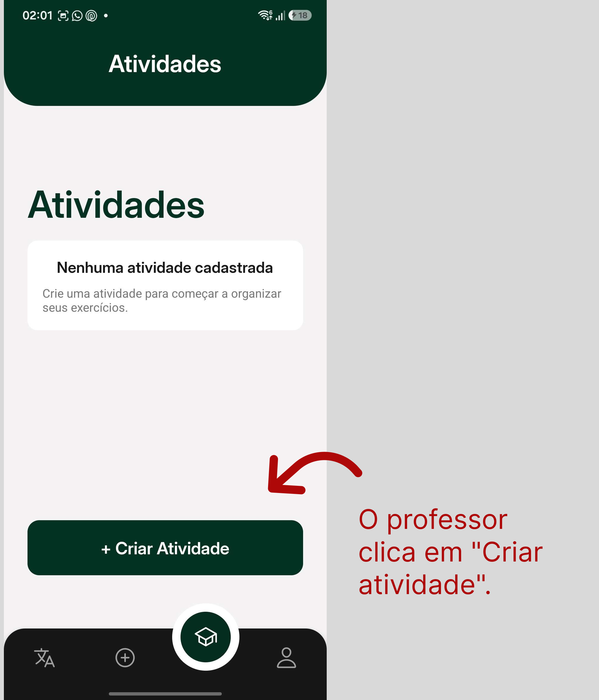

UC03 - Gerenciar Insígnias
1. Atores
Atores principais: Professor, Administrador
2. Objetivo
Permitir que professores e administradores criem, visualizem, editem e excluam insígnias personalizadas utilizadas na plataforma.
3. Pré-condições
- O ator deve estar autenticado no aplicativo.
- O ator deve possuir perfil de professor ou administrador.
- O ator deve acessar a página de gerenciamento de insígnias.
- O sistema deve possuir conexão ativa com o backend.
- O backend deve estar integrado ao banco de dados Firebase/Firestore.
4. Fluxo Principal
FP01 - Criar Insígnia
- O professor ou administrador acessa a seção de criação de insígnias. (RF07)
- O sistema identifica o perfil do ator autenticado. (RF07)
- O sistema valida se o ator possui permissão para criar insígnias. (RF07)
- O sistema apresenta o formulário de criação de insígnias. (RF07)
- O ator informa o título da insígnia. (RF07)
- O ator informa a descrição da insígnia. (RF07)
- O ator adiciona a imagem da insígnia. (RF07)
- O ator informa a porcentagem mínima de acerto para obtenção da insígnia. (RF07)
- O ator confirma a criação da insígnia. (RF07)
- O sistema valida os dados obrigatórios. (RF07)
- O sistema registra a insígnia no banco de dados. (RF07)
- O sistema disponibiliza a insígnia para uso na plataforma. (RF07)
- O sistema exibe mensagem de sucesso informando que a insígnia foi criada. (RF07)
5. Fluxos Alternativos
FA01 - Listar Insígnias
- O professor ou administrador acessa a página de insígnias. (RF08)
- O sistema identifica o perfil do ator autenticado. (RF08)
- O sistema busca as insígnias cadastradas. (RF08)
- O sistema exibe a lista de insígnias disponíveis. (RF08)
- O ator visualiza as insígnias cadastradas. (RF08)
FA02 - Editar Insígnia
- O professor ou administrador acessa a lista de insígnias. (RF08)
- O ator seleciona uma insígnia existente. (RF08)
- O sistema carrega os dados atuais da insígnia. (RF08)
- O ator altera o título, a descrição, a imagem e/ou a porcentagem mínima. (RF08)
- O ator confirma a edição da insígnia. (RF08)
- O sistema valida os dados alterados. (RF08)
- O sistema atualiza a insígnia no banco de dados. (RF08)
- O sistema exibe mensagem de sucesso informando que a insígnia foi atualizada. (RF08)
FA03 - Excluir Insígnia
- O professor ou administrador acessa a lista de insígnias. (RF09)
- O ator seleciona uma insígnia existente. (RF09)
- O ator aciona a opção de exclusão. (RF09)
- O sistema solicita confirmação da exclusão. (RF09)
- O ator confirma a exclusão. (RF09)
- O sistema remove a insígnia do banco de dados ou altera seu status para indisponível. (RF09)
- O sistema exibe mensagem de sucesso informando que a insígnia foi excluída. (RF09)
FA04 - Cancelar Criação ou Edição
- Durante a criação ou edição da insígnia, o ator aciona a opção de cancelar ou voltar. (RF07, RF08)
- O sistema descarta as alterações não salvas. (RF07, RF08)
- O sistema retorna o ator para a tela anterior. (RF07, RF08)
- Nenhum dado é registrado ou alterado no banco de dados. (RF07, RF08)
6. Fluxos de Exceção
FE01 - Interface Indisponível para o Perfil do Ator
- O professor ou administrador acessa o aplicativo autenticado. (RF07, RF08, RF09)
- O sistema identifica o perfil do ator autenticado. (RF07, RF08, RF09)
- O sistema exibe apenas as interfaces e ações permitidas para aquele perfil. (RF07, RF08, RF09)
- Caso o perfil não possua permissão para determinada ação, a opção correspondente não é exibida na interface. (RF07, RF08, RF09)
FE02 - Dados Obrigatórios Ausentes
- O ator tenta criar ou editar uma insígnia sem preencher os campos obrigatórios. (RF07, RF08)
- O sistema identifica a ausência de dados obrigatórios. (RF07, RF08)
- O sistema impede o salvamento da insígnia. (RF07, RF08)
- O sistema destaca os campos inválidos. (RF07, RF08)
- O sistema orienta o ator a preencher as informações necessárias. (RF07, RF08)
Campos obrigatórios mínimos:
- título;
- descrição;
- imagem;
- porcentagem mínima de acerto.
FE03 - Porcentagem Mínima Inválida
- O ator informa uma porcentagem mínima inválida durante a criação ou edição da insígnia. (RF07, RF08)
- O sistema identifica a inconsistência. (RF07, RF08)
- O sistema impede o salvamento da insígnia. (RF07, RF08)
- O sistema exibe mensagem informando que a porcentagem mínima deve estar entre 0 e 100. (RF07, RF08)
FE04 - Insígnia Indisponível por Estado Desatualizado
- O professor ou administrador visualiza uma insígnia antes da atualização completa do estado no banco de dados. (RF08, RF09)
- O ator tenta editar ou excluir a insígnia. (RF08, RF09)
- O sistema revalida a disponibilidade da insígnia no backend. (RF08, RF09)
- O sistema identifica que a insígnia foi removida ou tornou-se indisponível. (RF08, RF09)
- O sistema impede a operação solicitada. (RF08, RF09)
- O sistema atualiza a lista de insígnias disponíveis. (RF08)
- O sistema informa que a insígnia não está mais disponível para a operação solicitada. (RF08, RF09)
FE05 - Falha de Conectividade
- O ator tenta criar, listar, editar ou excluir uma insígnia sem conexão com o backend. (RF07, RF08, RF09)
- O sistema não consegue concluir a operação. (RF07, RF08, RF09)
- O sistema exibe mensagem de falha de conexão. (RF07, RF08, RF09)
- O sistema orienta o ator a tentar novamente quando a conexão for restabelecida. (RF07, RF08, RF09)
FE06 - Erro Interno no Banco de Dados
- O ator confirma uma operação válida envolvendo uma insígnia. (RF07, RF08, RF09)
- O sistema tenta registrar, atualizar, excluir ou consultar dados no Firestore. (RF07, RF08, RF09)
- O banco de dados retorna erro ou indisponibilidade. (RF07, RF08, RF09)
- O sistema cancela a operação. (RF07, RF08, RF09)
- O sistema exibe mensagem de erro interno. (RF07, RF08, RF09)
7. Regras de Negócio
- RN06 - Campos obrigatórios para registro de entidades
- RN07 - Dependência entre insígnias de acerto e atividade removida
8. Requisitos Relacionados
| RF | Relação com a UC |
|---|---|
| RF07 - Criar insígnia | Permite que professores e administradores criem insígnias personalizadas. |
| RF08 - Editar insígnia | Permite que professores e administradores visualizem e editem insígnias. |
| RF09 - Excluir insígnias | Permite que professores e administradores excluam insígnias. |
9. Protótipo
Link do Figma: Figma
10. Definition of Ready
Esta seção registra o print do checklist de Definition of Ready utilizado para validar a UC03.
Aplicação do DoR: Issue Uc03
Print do checklist DoR:

11. Fluxo de Acesso à UC
